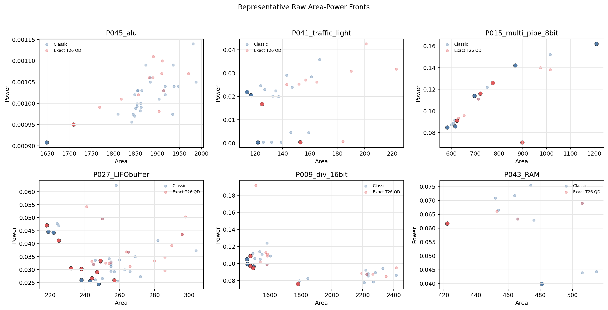

Full RTLLM Direct PPA Fronts
Representative raw area-power projections for the one-seed RTLLM milestone. Lower-left is better; darker markers are nondominated points. This static supplement is for reader-facing PPA-front inspection. The full linked archive/PPA viewer is in ../qd_ppa_viewer/.
